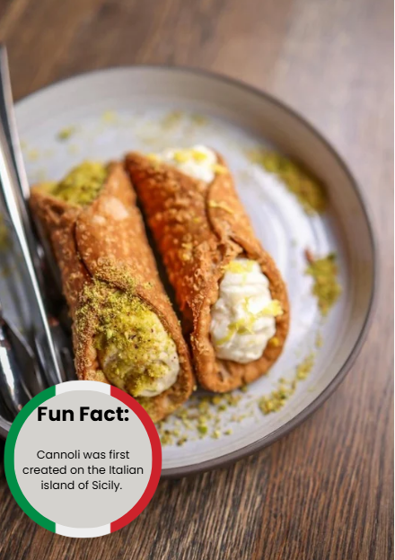

|  |
IngredientiUnbleached all-purpose flour Granulated sugar Salt Unsalted butter Marsala wine Salt Egg and egg white Vegetable oil Whole milk ricotta Mini chocolate chips Cinnamon |
Ricetta-Mix dry ingredients in a food processor. -Pulse in butter -Add the marsala wine and the egg and pulse to bring together. -Transfer to an oiled bowl, cover, and rest the dough. -Heat oil in a pot. -Roll the dough out very thin on a floured surface. -Cut into rounds or ovals (about 4 inches each). -Wrap rounds around greased cannoli forms, brush top or bottom edge with egg white to seal shut. -Fry in preheated oil until golden brown and crisp, about 1 – 2 minutes. -Remove cannoli shells and drain on paper towels. -Remove shells from forms, let forms cool, and repeat process. Make cannoli filling. -Let shells cool completely, then fill with cannoli filling. |